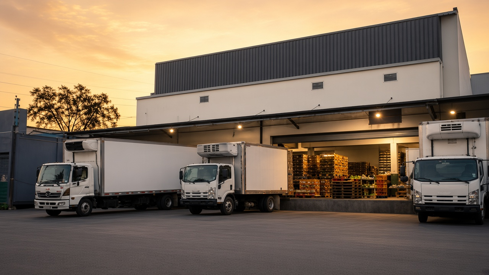
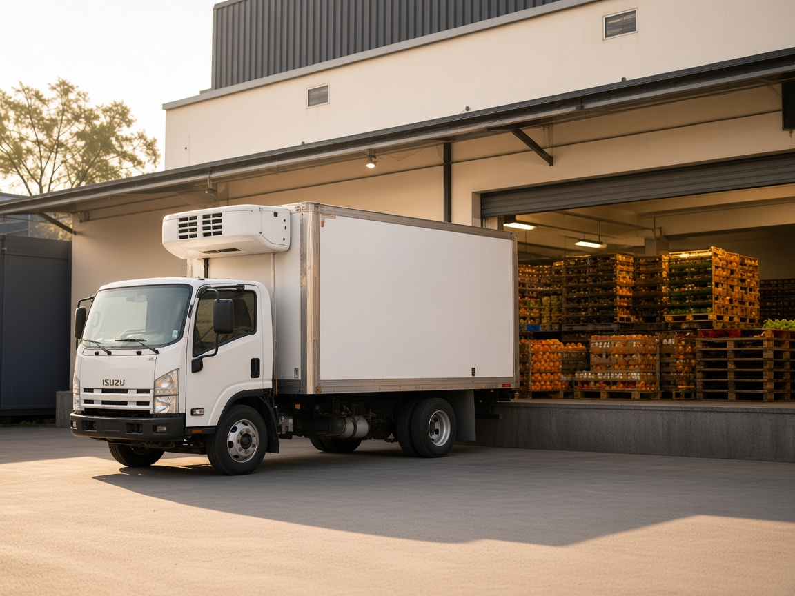

Cámara fría
250 m². Temperatura controlada desde que la caja entra hasta que sube al camión.

Empezamos con un camión y una lista de clientes. Hoy salen dos rutas al día, los siete días de la semana.
Nuestra medida es la caja que pediste anoche: completa esta mañana, a la temperatura correcta y en la puerta que corresponde. Trece años son la suma de esas entregas.


Estamos cerca de donde llega el producto cada madrugada, y eso nos da el mismo acceso que tiene quien opera dentro. Guardamos en bodega propia: temperatura controlada de principio a fin, un área de selección de uso exclusivo, horario propio y trazabilidad de cada caja desde que entra hasta que se firma.
250 m². Temperatura controlada desde que la caja entra hasta que sube al camión.
Por calibre y madurez. Área de selección de uso exclusivo.

Andén propio. El horario lo marcan las dos rutas del día.

Cocina equipada para capacitar, probar un menú o fotografiar platillos. Uso gratuito.